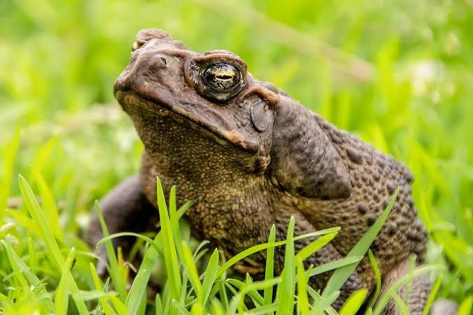

SAPO GIGANTE

Sapo gigante
El sapo gigante o sapo de caña (Rhinella marina) también conocido como sapo neotropical gigante o sapo marino, es una especie de la familia Bufonidae.
Este anfibio tiene grandes glándulas venenosas; los adultos y renacuajos al ser ingeridos son altamente tóxicos para la mayoría de los animales. Es grande y terrestre, mide en promedio de 10 a 15 cm.
Su piel seca y verrugosa tiene distintas protuberancias que comienzan encima de los ojos y terminan en el hocico. Puede ser gris, marrón, rojo-marrón u oliva.
Este animal tiene origen en América y su área de distribución se extiende desde el norte de México hasta la zona central del Amazonas y toda la parte sureste de Perú. Normalmente, tiene un hábitat preferiblemente situado en ecosistemas con un ambiente semiárido y un clima tropical. En su hábitat natural la densidad de sapos gigantes que existe en es baja si lo comparamos con los hábitats donde han sido introducidos como especie invasora.
- Los sapos gigantes puede llegar a alcanzar 20 cm de longitud y a pesar más de 1,5 kg
- Su piel es verrugosa, seca, de color oscuro (marrón, gris, etc.) y con manchas irregulares
- Veneno: Justo detrás de los ojos se encuentran las glándulas parótidas, las cuales secretan un líquido de color blanquecino, que se conoce como bufotoxina, que está compuesto por sustancias muy tóxicas para la especie animal. Estos sapos desde que se encuentran en desarrollo, es decir, renacuajos, tienen la capacidad de expulsar esta sustancia.
- Los sapos gigantes son carnívoros
- Los sapos gigantes son nocturnos, es decir, que salen de noche a alimentarse
REGRESAR AL MENU